Faust News
2018-07-23: Faust's Evolution
View the evolution of the Faust project from 2004 to 2018.
The visualization was done using Gource. Here is the command used (as suggested by fullybacked):
gource --hide dirnames,filenames --seconds-per-day 0.1 --auto-skip-seconds 1 -1920x1024 -o - | ffmpeg -y -r 60 -f image2pipe -vcodec ppm -i - -vcodec libx264 -preset ultrafast -pix_fmt yuv420p -crf 1 -threads 0 -bf 0 faust-hd.mp4
2018-07-23: Faust Award 2018
The Faust Open Source Software Competition aims at promoting innovative high-quality free audio software developed with Faust, a functional programming language for realtime signal processing and sound synthesis. The competition is sponsored by GRAME, Centre National de Création Musicale.
Faust Award 2018 to iPlug 2
The Faust Award 2018 was attributed by an international committee composed of :
- Jean-Louis Giavitto (IRCAM, Paris, France),
- Albert Graef (Johannes Gutenberg U., Mainz, Germany),
- Pierre Jouvelot (Ecole des Mines, Paris, France),
- Victor Lazzarini (Maynooth U., Maynooth, Ireland),
- Romain Michon (Stanford U., Palo Alto, USA)
- Yann Orlarey (GRAME, Lyon, France),
- Laurent Pottier (U. Jean Monnet, Saint-Etienne, France),
- Julius Smith (Stanford U., Palo Alto, USA)
to iPlug 2 a free open source C++ audio plug-in framework, allowing developers to create audio plug-ins and apps across a wide range of formats from the same code, including graphical user interface and DSP components. Amongst many other new features and a reworked code base, version 2 includes support for FAUST, allowing sections of audio DSP to be implemented using the FAUST language, and easily integrated with other C++ elements.
iPlug 2 is developed by Oliver Larkin and Alex Harker from the original iPlug, by Cockos inc. that was open sourced in 2008. The project is under active development and will be publicly released at the end of 2018.
The jury praised the quality, the ambition, and the usefulness of iPlug 2 as a Faust development framework! Check the demo here. We hope that the Faust Award will help the authors to fully finalize the project.
Faust Student Software Competition to Cloud Generator
In parallel to the main competition, the Faust Student Software Competition, is intended to promote small, but innovative Faust applications, typically developed in the framework of student projects.
The student prize 2018 was awarded to Cloud Generator a nine-voice polyphonic synthesizer developed by Rittik Wystup.
The jury praised the audio quality and the care taken by Rittik Wystup in his project! Check the Cloud Generator demo here.
2018-07-10: IFC 2018
International Faust Conference IFC18: July 17-18, 2018
The International Faust Conference IFC18 will take place at the Johannes Gutenberg University of Mainz (Germany) on July 17-18, 2018. It aims at gathering developers and users of the Faust programming language to present current projects and discuss future directions for Faust and its community.
Participants will be able to share their work through paper presentations. A series of round tables on various topics will serve as a platform to brainstorm on Faust's features, semantics, tools, applications, etc. to determine future directions for this language. Open spaces for demos and workshops will be available for participants to openly share their ongoing projects with the rest of the community.
As a special event, the winner of GRAME's Faust Open-Source Software Competition will be announced during IFC18.
IFC-18 is free and everyone is welcome to attend! Please register here
--
2018-02-18: Faust Award 2018
Faust Award 2018: deadline June 1, 2018
The Faust Open-Source Software Competition is intended to promote innovative high-quality free audio software developed with the Faust programming language, as well as development tools built around the Faust compiler itself. The Faust Open-Source Software award will be attributed to the best submission by an international committee of leading experts in the field. The competition is sponsored by Grame, centre national de création musicale. The winning software will receive a 2000€ price to encourage its authors. The results will be announced July 17, 2018 during the International Faust Conference in Mainz IFC18.
To participate, the software must be provided with source code and licensed with a Free/Open Source license. A substantial part of the software must be written in Faust and the Faust source code must be provided. As part of the review process, the software will be built from the sources. All source code, license, video demonstration, installation instructions, and any other documentation must be available on a public web page. License compatibility with other open source software is encouraged. Dependencies on non-open source third-party software are discouraged, with the exception of operating systems and freely available commercial packages.
Authors are required to prepare a video demonstrating the software. This video must be done carefully, and should convincingly present the qualities of the software. The submission must also contain any useful documentation, including examples of how the provided software might be used, existing prototypes that use the software, download statistics or other public usage information. The criteria for judging submissions includes broad applicability and potential impact, novelty, technical depth, reusability, etc.
Junior Competition
In parallel to the Faust Open-Source Software Competition we have a junior competition, the Faust Student Software Competition, with a 200€ prize for the winner. The Faust Student Software Competition is intended to promote interesting audio processing and synthesis applications written in Faust in a single file in less than 1000 words. The word count is done after removing the comments from the code:
cat foo.dsp | stripcmt | wc -w.
The use of the standard Faust libraries is strongly encouraged. They don't take part in the word count.
Important dates
- Start of the competition: February 18, 2018
- Software Submission Deadline: June 1, 2018
- Results of the competition: July 17, 2018
Submission Guidelines
Authors interested in participating in the Faust Open Source Software Competition or the Faust Student Software Competition should send a submission email to faustaward@grame.fr with a PDF file attached containing the following information:
- Title of submission,
- Category of submission (Faust Open Source Software Competition or Faust Student Software Competition),
- Name, email and affiliation of the main author,
- Names, emails and affiliations of other authors,
- A permanent link for the open source software (e.g., Sourceforge, GitHub, Google Code, etc.),
- A permanent link for the video demonstration (e.g., YouTube, Vimeo, etc.),
- A link to a compressed archive file that contains the software (source code, documentation, build/install instructions, and licenses). Comprehensive and clear build/install instructions will be a crucial component of any submission. The committee will make a reasonable effort to build the software for the top contributions, but if they are unable to make the software run, it will be excluded from the competition.
International Committee
- Jean-Louis Giavitto (IRCAM, Paris, France),
- Albert Gräf (Johannes Gutenberg U., Mainz, Germany),
- Pierre Jouvelot (Ecole des Mines, Paris, France),
- Victor Lazzarini (Maynooth U., Maynooth, Ireland),
- Romain Michon (CCRMA, Stanford , USA)
- Yann Orlarey (Grame, Lyon, France),
- Laurent Pottier (U. Jean Monnet, Saint Etienne, France),
- Julius Smith (CCRMA, Stanford , USA)
Previous Winners
- 2015: Guitarix, by Hermann Meyer and Andreas Degert
- 2016: Ambitools, by Pierre Lecomte; Student prize: TouchVoices, by Pierre-Adrien Théo.
2017-12-12: WebAudio wasm...
WebAudio wasm benchmark pages and tools
WebAudio wasm benchmark pages and tools allow to test statically generated HTML pages from Faust DSP. Audio generating pages in ScriptProcessor or AudioWorklet mode can be tested first. DSP CPU benchmark pages can be used to test the perfomance of wasm code across different browsers.
Tools to generate new DSP CPU benchmark pages are also available, and finally a page allowing to test the dynamic compilation chain can be acccesed.
Simple pages
Simple pages can be used to test simple monophonic and polyphonic DSP, generated as ScriptProcessor or AudioWorklet WebAudio nodes.
- statically generated OSC as a ScriptProcessor node
- statically generated MIDI controllable Organ as a ScriptProcessor node
Note that as 12/12/17, AudioWorklet pages can ony be tested with Chrome Canary. Be sure to activate AudioWorklet mode first. On a MacBook Pro OSX El Capitan 2,2 GHz Intel Core i7, we still hear audio glitches when testing them, for example when opening the JavaScript console, or interacting with other applications (like scrolling in the XCode editor, scrolling in the terminal...)
- statically generated OSC as an AudioWorlet node
- statically generated MIDI controllable Organ as an AudioWorlet node
Polyphonic MIDI aware pages
More complex statically generated polyphonic MIDI aware pages can be tested.
ScriptProcessor based pages:
AudioWorklet based pages:
- modules-worklet/clarinetMIDI.html
- modules-worklet/elecGuitarMIDI.html
- modules-worklet/violinMIDI.html
Benchmark pages
A set of statically generated pages allow to measure the DSP CPU use of Faust generated WebAssemby code. The compute method is repeatedly called in a loop (taking 100% of a core) which duration is measured. Results as MBytes/sec as well a DSP CPU load in % of a 1024 frames, 44.1 kHz audio buffer are displayed.
On the following pages, just hit the Start benchmark button, and wait for the result to be displayed. Note that since the computation is done in the main JavaScript thread, don't disturb your machine too much to get a reliable result. The pages can typically be used to compare the performances of different browsers:
- bench/clarinetMIDI.html
- bench/djembe.html
- bench/filterBank.html
- bench/freeverb.html
- bench/frenchBell.html
- bench/guitarEffectChain.html
- bench/karplus.html
- bench/karplus32.html
- bench/kisana.html
- bench/spectralLevel.html
- bench/stunedBar6.html
- bench/violinMIDI.html
- bench/zitaRev.html
Testing the denormal issue
A specific problem occurs when audio computation produces denormal float values, which is quite common with recursive filters, and can be extremely costly to compute on some processors like the Intel family for instance. Even with the software FTZ mode, we still see huge DSP CPU issue in some cases like this djembe physical model based on simple biquad filters:
On OSX for instance, open the Activity Monitor tool and look as your browser CPU use. Then hit the checkbox to start playing, and hit it again to stop it. Silence should be produced, but actually very small sample values (= subnormals) are generated. If your machine uses an Intel CPU, you will see CPU raise quite rapidly ! (tested on a MacBook Pro OSX El Capitan 2,2 GHz Intel Core i7).
Benchmark tools
For developers, benchmark tools allow to generate HTML pages to test your DSP. Look in particular at the faust2benchwasm script.
Dynamic compilation chain testing page
A more complete testing page for monophonic and polyphonic MIDI aware DSP, ScriptProcessor or AudioWorklet mode, FTZ selection mode is available here.
2017-11-07: 1st IFC
1st International Faust Conference - Johannes Gutenberg University, Mainz (Germany), July 17-18, 2018
The International Faust Conference IFC-18 will take place at the Johannes Gutenberg University of Mainz (Germany) on July 17-18, 2018. It aims at gathering developers and users of the Faust programming language to present current projects and discuss future directions for Faust and its community. Participants will be able to share their work through paper presentations. A series of round tables on various topics will serve as a platform to brainstorm on Faust's features, semantics, tools, applications, etc. to determine future directions for this language. Open spaces for demos and workshops will be available for participants to openly share their ongoing projects with the rest of the community.
As a special event, the winner of GRAME's Faust Open-Source Software Competition will be announced during IFC-18.
IFC-18 is free and everyone is welcome to attend!
Call for Papers
We welcome submissions from academic, professional, independent programmers, artists, etc. We solicit original papers centered around the Faust programming language in the following categories:
- Original research
- Technology tutorial
- Artistic project report (e.g., installation, composition, etc.)
Paper should be up to 14 pages in length, non anonymous, and formatted according to this template. Submissions should be carried out via our EasyChair portal.
All submissions are subject to peer review. Acceptance may be conditional upon changes being made to the paper as directed by reviewers.
Accepted papers will be published on-line as well as in the IFC-18 proceedings paper version. They will be presented by their author(s) at IFC-18 as 15 minutes presentations (+ 5 minutes for questions).
Feel free to contact us if you have any question.
Important Dates
- Papers submission deadline: March 2, 2018
- Notification of Acceptance: May 1, 2018
- Camera-Ready Version: June 1, 2018
Call for Round Table Topics
A series of round tables on the following themes will take place both afternoons of IFC-18:
- Faust Tools (e.g., Architectures, IDE, Faust Code Generator, On-Line Services, etc.)
- DSP in Faust and Faust Libraries (e.g., New Algorithms, New Libraries, Missing Functions, etc.)
- Faust Compiler and Semantics
- Other Topics/Open Session
We solicit topic suggestions from the Faust community for each of these themes. Topics can be submitted by means of this Google form. They will be introduced during the round tables by the session chair.
Contact
Please, address your questions to: ifc18@muwiinfa.geschichte.uni-mainz.de
Conference website: http://www.ifc18.uni-mainz.de
2017-10-20: New Editor
New Faust Editor
We are very happy to announce the online Faust Editor. It can be used to edit, compile and run Faust code from any recent Web Browser with WebAssembly support. This editor works completely on the client side and it is therefore very convenient for situations with many simultaneous users (workshops, classrooms, etc.). It embeds the latest version of the Faust compiler with an efficient WebAssembly backend and offers polyphonic MIDI support.
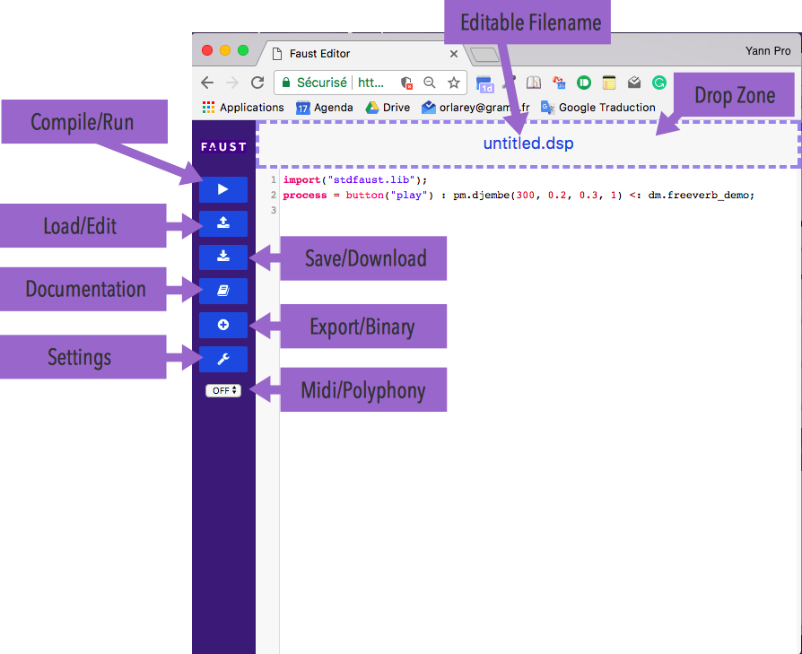
Features
The editor engine is based on codemirror. It offers syntax highlighting, auto completion and direct access to the online documentation. The documentation command (ctrl-d) uses the function name at the cursor position to locate to the relevant information.
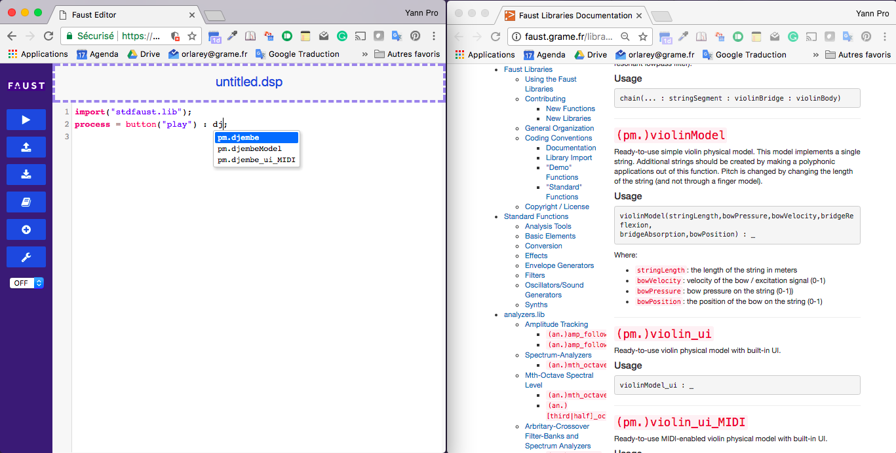
Recommended Browsers
The recommended browsers are the latest versions of Firefox and Chrome. Chrome is recommended for MIDI, but it requires an https connexion to use the audio inputs. On the other hand MIDI is not supported by Firefox.
Useful links
- Editor: the official link,
- https://grame-cncm.github.io/fausteditorweb/: an alternative link on GitHub. Because this is an https address, audio inputs will work (but not the export function),
- https://github.com/grame-cncm/fausteditorweb: the GitHub repository.
2017-09-15: Performances...
Performances of audio DSP code compiled in WebAssembly
Porting and running large C/C++ code base on the Web have been the subject of several competing projects in the recent years, from Google NaCl/PNaCl to Mozilla asm.js. Recently standardized WebAssembly language inherits from ideas experimented in both approaches, with the Mozilla vision finnally winning as Robert O'Callahan explains here. Coupled with the WebAudio API, running real-time audio code in the Web now appears to be an achievable goal.
WebAssembly is a hot topic in the JavaScript ecosystem. The WebAudio community is eagerly waiting for the AudioWorklet specification, with its promised reduced latency and glitch-free audio rendering, to land in browser development versions, and be tested. Porting well established C/C++ codebase with Emscripten, like the Csound framework as an example, or using DSL languages like Faust, will then naturally beneficiate from improved and more stable performances.
The Faust ecosystem already allows to generate static or dynamically compiled WebAssembly based WebAudio nodes. These nodes are still using the deprecated ScriptProcessor WebAudio interface. Premillinary work has been started to be ready as soon at the AudioWorklet model will be testable.
In the meantime, work have been started using the WAVM, a standalone VM for WebAssembly, that can load both the standard binary and text wasm format, compiling it in native code using the LLVM chain (generating LLVM IR and compiling it on the fly to native code using LLVM JIT compiler), and running it at (near) native speed.
Glue code to load and run Faust generated wasm modules has been written. Validation and benchmarking tools have been developed. Performances comparison with the C++ and LLVM IR Faust backends is the subject of this post.
Comparing the Faust C++, LLVM IR and wast/wasm backends
The WebAssembly approach promises near native performances for C/C++ written code compiled to WebAssembly using the Emscripten tool chain. Other languages like Rust (using the mir2wasm tool) experiment direct WebAssembly generation. It seems clear that as WebAssembly specification and implementation stabilize, more and more languages will directly generate wasm to be deployed in browsers. The question of the quality of code generation at each step of the compilation chain will rapidly emerge.
While WebAssembly is initially designed to run on the Web, it may be deployed in non Web environnement like nodejs, or even in standalone VM like WAVM. Thus WebAssembly becomes a portable binary format that can be used in a large variety of situations. This is especially of interest for a DSL language like Faust.
Faust wast/wasm backend
Faust wast/wasm backend directly produce WebAssembly code from the Faust internal FIR (Faust Imperative Representation) code. Generated modules are rather light since they define a very simple ABI to be used by the loader code. Two generation models have been defined:
-
in monophonic mode the wast/mast module internally allocates a memory block to be used for the DSP state (controllers, delays lines, waveforms...) as well as audio buffers.
-
in polyphonic mode, the memory block will be allocated by the loader environnement. This block will typically be sized to contain all the needed voices for the polyphonic DSP.
In both cases, a full description of the DSP state as a JSON string is generated in the module data segment (including memory indexes of all controllers). Loader code will get and decode this JSON description, and use whatever parts of the description it needs to run the DSP code. In particular, control memory zones (corresponding to the UI items like buttons, sliders, bargraph...) can be directly read/written by the wrapper code.
Benchmark of C++, LLVM IR and wast/wasm generated code
Since Faust already generates C++ or LLVM IR code, the performances of those two backends can be compared with the new wasm one. Using the WAVM C++ written machine allows to deploy the same measuring code. The first benchmark compares the speed of C++, LLVM IR and wasm backends running a set of DSP, running on a MacBook Pro 2,2 GHz Core I7 with OSX El capitan. The same 4.0 version of LLVM toolchain has been used with the three backend. C++ and LLVM IR code has been compiled with the -Ofast optimization flag, the WAVM runtime is the standard version one (without any specific audio optimization, see later):
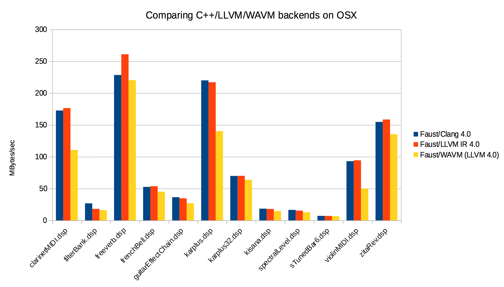
The diagrams clearly shows that the wasm code is still slower than C++ or LLVM IR code, but speed difference is not so high in most cases. Some DSP behaviours need to be understood in more details.
Optimizing the WAVM runtime for audio code
The WAVM runtime strictly conforms to the WebAssembly specification, thus behaving as a interesting base reference. In the audio domain, the deployed code is usually compiled with specific optimization flags. Since C++ WAVM runtime can be hacked quite easily, we did several changes into the reference implementation to gain some speed:
-
removing the atomic flag in all load/store that are added to pass all spec WebAssembly tests.
-
adding the equivalent of -fast-math compilation flag that have to be done at LLVM IR and JIT (= native) generation steps.
-
and finally simplifying some mathematical operators, using their standard definition instead of the specific WAVM coded ones that strictly implement WebAssembly official semantic (see for instance the definition of f32.min/f32.max operations).
Here is the diagram of DSP examples run with reference WAVM runtime, and the three specific optimizations:
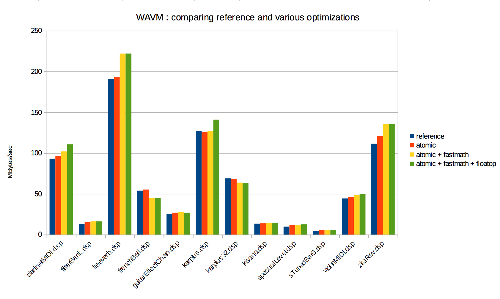
After generating the LLVM IR code, the WAVM runtime runs a set of LLVM IR to IR optimizations passes. It remains to be tested if adding more optimization passes (especially the auto-vectorizations ones) could help producing even better code.
WebAssembly module optimization with Binaryen
Binaryen is a compiler and toolchain infrastructure library for WebAssembly, written in C++. We tested the wasm-opt tool at -O3 level on Faust generated wasm modules to estimate which speedup we can expect. The following diagram shows limited gains, with no more than 5% in some of the tested cases:
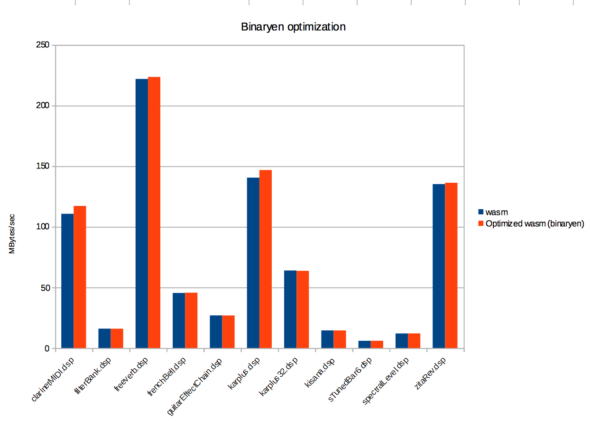
Float denormal handling
A specific problem occurs when audio computation produces denormal float values, which is quite common with recursive filters, and can be extremely costly to compute on some processors like the Intel family for instance. A Flush To Zero (FTZ) mode for denormals can usually be set at hardware level, but it not yet available in the WebAssembly MVP version, which strictly conform to the IEEE 754 norm 8.
Thus an automatic software strategy which consists in adding FTZ code in all recursive loops has been implemented in the Faust compiler. To activate it, the -ftz compilation parameter must be used at compilation time.
The -ftz 1 mode adds a test in each recursive loop which uses the fabs function and a threshold to detect subnormal samples (slower). The -ftz 2 mode adds a test in each recursive loop which uses a mask to detect subnormal samples (faster).
Even if using software ftz is not strictly needed in our benchmark chain (since the C++ WAVM uses the ftz hardware protection mode), we can still compare the speed of the different ftz options. Here is the result of code generated with -ftz from 0 to 2:
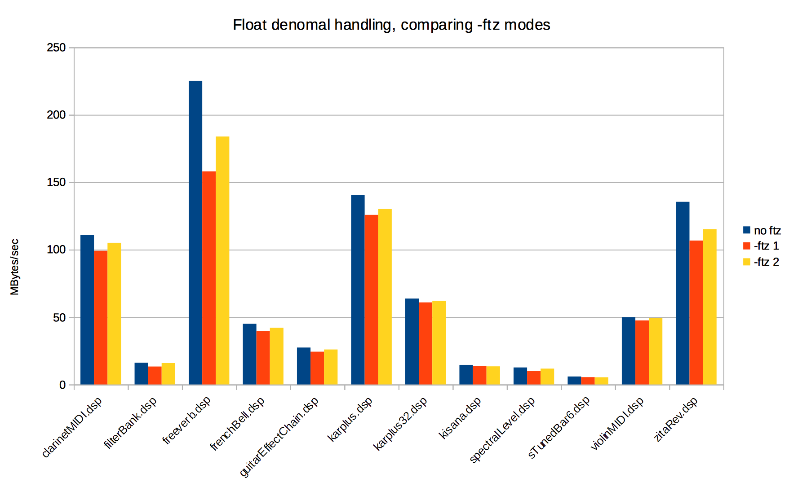
Comparing three browsers on OSX El Capitan
HTML test pages were prepared to compare the performances of the three main browsers on OSX El Capitan. The DSP code is compiled with float denormal protection on (-ftz 2). The generated wasm module compute method is called repeatedly in a timed loop, using successive slices of a big allocated circular audio buffer to avoid cache effects. Here are the results:
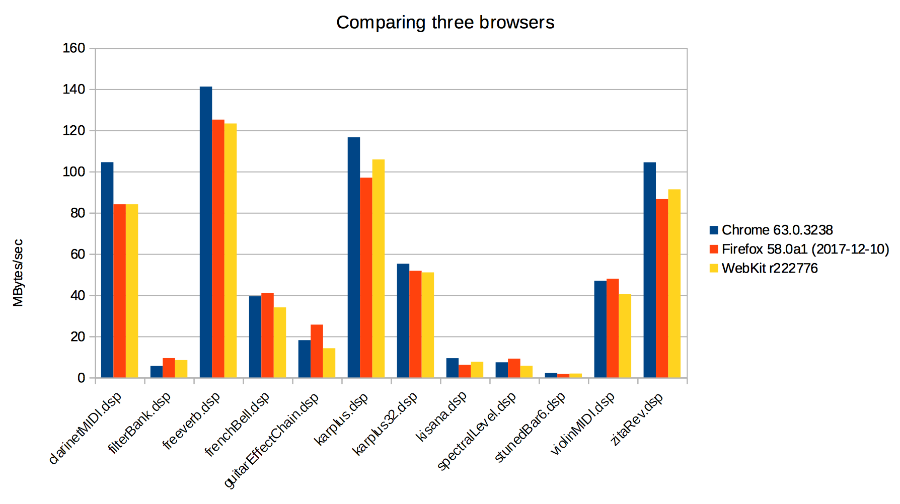
The fasted one (Chrome for now) can be compared with C++, LLVM IR, WAVM native engines, all compiled with float denormal protection on (-ftz 2):
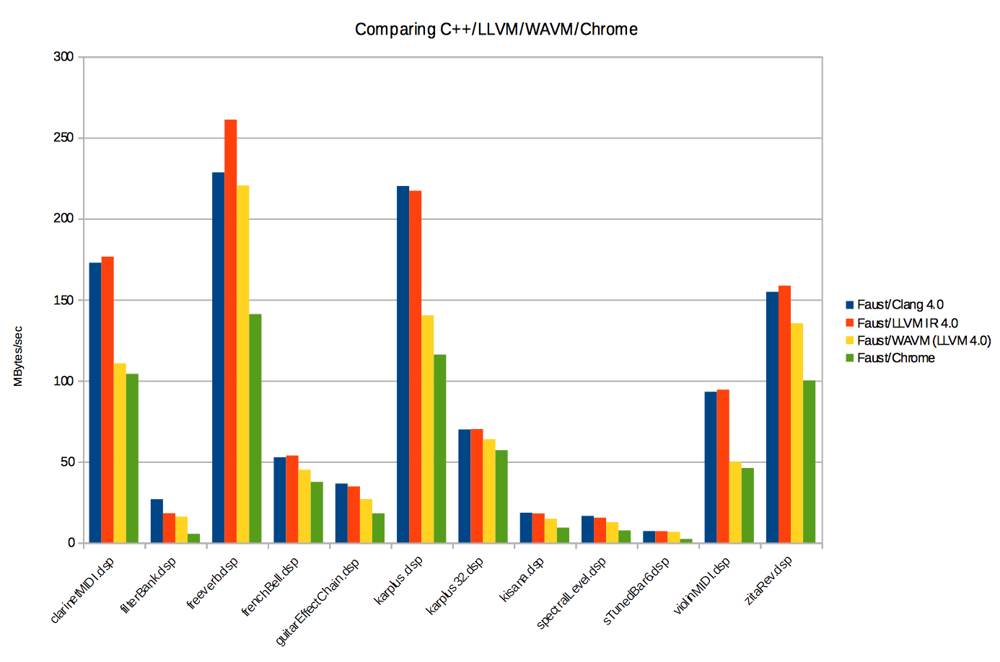
Comments and Conclusion
Testing wasm JIT machines inside browsers is not an easy task. The C++ WAVM runtime revealed to be an excellent tool to compare the Faust C++, LLVM IR and wasm backend. Since its code can be easily adapted, one can estimate also what can be expected deploying wasm DSP modules in pure native environments, outside of the browser, where some audio specific optimizations may be considered.
Measures done on a set of Faust DSP show that WebAssembly code still run slower than C++ or LLVM IR generated code in most cases, up to almost 66% slower in the less favorable examples. This value will typically be a bit worse when deploying in browsers, since float denormal protection code has to be used. Benchmarks in browser wasm runtime still need to be done to confirm or refine these findings.
Comparing the Chrome, Firefox and WebKit browsers on OSX El Capitan shows that Chrome is currently the fastest engine in most cases, with Firefox and WebKit quite similar (with a slight plus for WebKit).
Comparing the Chrome browser with native engines shows results from 4,8 times slower (filterBank.dsp), 2,8 times slower (sTunedBar6.dsp) up to much more favorable cases (karplus32.dsp). Note that filterBank.dsp example is a bit of a pathological case, since Chrome is significantly slower than Firefox and WebKit in this case, and filterBank.dsp uses a lot of pow(10, x) code that is rewritten an optimized as exp10(x) with the C++ backend path.
2017-08-18: Faust on the Web
Deploying Faust DSP on the Web
EDIT : we are at the Web Audio conference 2017, and it appears that the way we currently extend the ScripProcessorNode with Faust code is not the Right Way... Part of the post concerning the exposed API will probably change a bit in the near future...
Using latest developments done for the Web (the new WebAssembly backends and libfaust library compiled in WebAssembly with Emscripten), statically and dynamically Faust generated WebAudio nodes can be easily produced and deployed on the Web.
Deploying statically compiled Faust WebAudio nodes
From a foo.dsp source file, JavaScript and the associated WebAssembly files can be produced with the following script:
faust2wasm foo.dsp
This will generate a foo.wasm file with the WebAssembly module as binary code, as well as a foo.js wrapper file containing the code needed to turn the Faust DSP in a fully working WebAudio node (using an extended ScriptProcessor node). The name of the Faust DSP code file is used to define the final ScriptProcessorNode constructor name. So for instance if osc.dsp file is compiled, the following faust.createosc function will be generated:
/**
* Create a 'monophonic' ScriptProcessorNode Web Audio object
* by loading and compiling the Faust wasm file
*
* @param context - the Web Audio context
* @param buffer_size - the buffer_size in frames
* @param callback - a callback taking the created ScriptProcessorNode as parameter,
* or null in case of error
*/
faust.createosc = function(context, buffer_size, callback)
The resulting object is an extended ScriptProcessorNode, to be used as a regular node (like connected to other WebAudio nodes), but which also adds the Faust specific API as defined in the equivalent C++ generated dsp class (see the architecture/faust/dsp/dsp.h header for more technical details), as well as JavaScript more specific functions. For instance the following ones will have to be used to control the node:
var paths = node.getParams(); // get the set of paths to read/write input control parameters
Then knowing the path for a given parameter, the following function is used to change the parameter value:
node.setParamValue("/Oscillator/freq", 0.6);
A full JSON description of the node with the complete UI, can be retrieved with:
var json = node.getJSON();
The complete usable API is fully documented in the generated JavaScript file in the Public API to be used to control the WebAudio node section.
A simple example Web page
A simple Web page using the files generated by faust2wasm on the noise.dsp file can be defined with the following parts:
<!-- Load 'faust2wasm' script generated .js file -->
<script src="noise.js"></script>
A slider to control the noise volume parameter is defined with:
<P> Noise volume:
<input type="range" oninput="changeVolume(event) "min="0" max="1" value="0.5" step="0.01"/>
The WebAudio context is created and the noise slide hander is defined with:
var isWebKitAudio = (typeof (webkitAudioContext) !== "undefined");
var audio_context = (isWebKitAudio) ? new webkitAudioContext() : new AudioContext();
var noise = null;
// Slider handler to change the 'noise' volume
function changeVolume(event)
{
noise.setParamValue("/Noise/Volume", parseFloat(event.target.value));
}
A startnoise function which creates the Faust WebAudio node is defined with:
function startnoise()
{
// Create the Faust generated node
faust.createnoise(audio_context, 1024,
function (node) {
noise = node;
console.log(noise.getJSON());
// Print paths to be used with 'setParamValue'
console.log(noise.getParams());
// Connect it to output as a regular WebAudio node
noise.connect(audio_context.destination);
});
}
An finally the load handler is defined to activate the code:
window.addEventListener("load", startnoise);
Look at the Noise and OSC online pages for the complete code.
Note that pages loading an additional .wasm file cannot directly be loaded in Chrome. You'll have to start a local server (using the python -m SimpleHTTPServer command for instance) and access them with their http:// based URL.
Generating Polyphonic WebAudio nodes
Assuming that the compiled Faust DSP file is polyphonic ready, a polyphonic ready WebAudio node can be created with the -poly parameter, and will generate the following constructor for the node (where the mydsp part will be replaced by the actual DSP name):
/**
* Create a 'polyphonic' ScriptProcessorNode Web Audio object
* by loading and compiling the Faust wasm file
* to be use for the voice, and allocating the number of needed voices
*
* @param context - the Web Audio context
* @param buffer_size - the buffer_size in frames
* @param polyphony - the number of polyphonic voices
* @param callback - a callback taking the created ScriptProcessorNode
* as parameter, or null in case of error
*/
faust.createmydsp_poly = function(context, buffer_size, polyphony, callback)
Polyphonic nodes have an extended API to be controled with MIDI messages:
/**
* Instantiates a new polyphonic voice.
*
* @param channel - the MIDI channel (0..15, not used for now)
* @param pitch - the MIDI pitch (0..127)
* @param velocity - the MIDI velocity (0..127)
*/
keyOn = function (channel, pitch, velocity)
/**
* De-instantiates a polyphonic voice.
*
* @param channel - the MIDI channel (0..15, not used for now)
* @param pitch - the MIDI pitch (0..127)
* @param velocity - the MIDI velocity (0..127)
*/
keyOff = function (channel, pitch, velocity)
/**
* Gently terminates all the active voices.
*/
allNotesOff = function ()
Look at the JavaScript public documentation section for the complete description.
Extended control with -comb parameter
The faust2wasm tool can be used with the -comb parameter to compile several DSP files and contatenate all JavaScript code in a unique resulting comb.js file (possibly to be used in -poly mode also).
Generating fully working self-contained HTML pages
The faust2webaudiowasm script can be used to generate a fully working self-contained HTML page, with a SVG/CSS a Graphical User Interface. From the osc.dsp Faust DSP source file, it will generate an osc.html file:
faust2webaudiowasm osc.dsp
Assuming that the compiled Faust DSP file is polyphonic ready, the -poly parameter can be used to generate a polyphonic MIDI controlable instrument, to be used with a MIDI application or device.
The -links generates the DSP processor SVG representation, and links to the original DSP file as well as generated SVG files, so that the HTML page can possibly be deployed as a reusable Faust DSP resource.
WebAssembly module optimization
Assuming that you have Binaryen tools installed on your machine, the faust2wasm and faust2webaudiowasm scripts can take an additional -opt parameter to allow WebAssembly module optimization.
Deploying dynamically compiled Faust WebAudio nodes
Since the libfaust library is available for the Web, it becomes possible to embed the complete dynamic compilation chain in a Web page, from the Faust DSP source to the executable WebAudio node. First the following resources (located on the Faust GitHub in architecture/webaudio folder) have to be loaded in the page:
<!-- Load 'libfaust' library and wrapper code -->
<script src="libfaust-wasm.js"></script>
<script src="webaudio-wasm-wrapper.js"></script>
Then the two following functions are used to generate factories, creating later on monophonic or polyphonic instances (this is necessary because of the way internal WebAssembly memory is managed):
/**
* Create a DSP factory from source code as a string to be used to create monophonic DSP
*
* @param code - the source code as a string
* @param argv - an array of parameters to be given to the Faust compiler
* @param callback - a callback taking the created DSP factory as parameter,
* or null in case of error
*/
faust.createDSPFactory = function (code, argv, callback)
/**
* Create a DSP factory from source code as a string to be used to create polyphonic DSP
*
* @param code - the source code as a string
* @param argv - an array of parameters to be given to the Faust compiler
* @param callback - a callback taking the created DSP factory as parameter,
* or null in case of error
*/
faust.createPolyDSPFactory = function (code, argv, callback)
The two following functions are used to generate monophonic or polyphonic Faust WebAudio nodes:
/**
* Create a ScriptProcessorNode Web Audio object from a factory
*
* @param factory - the DSP factory
* @param context - the Web Audio context
* @param buffer_size - the buffer_size in frames
* @param callback - a callback taking the created ScriptProcessorNode as parameter,
* or null in case of error
*/
faust.createDSPInstance = function (factory, context, buffer_size, callback)
/**
* Create a 'polyphonic' 'ScriptProcessorNode Web Audio object from a factory
*
* @param factory - the DSP factory
* @param context - the Web Audio context
* @param buffer_size - the buffer_size in frames
* @param polyphony - the number of polyphonic voices
* @param callback - a callback taking the created ScriptProcessorNode as parameter,
* or null in case of error
*/
faust.createPolyDSPInstance = function (factory, context, buffer_size, polyphony, callback)
The resulting nodes have the same API as statically compiled nodes described in the first section, so can be controlled the same way, including the polyphonic ones. Here is a code example using faust.createDSPFactory and faust.createDSPInstance:
var isWebKitAudio = (typeof (webkitAudioContext) !== "undefined");
var audio_context = (isWebKitAudio) ? new webkitAudioContext() : new AudioContext();
var dsp_code = "import(\"stdfaust.lib\"); vol = hslider(\"volume [unit:dB]\", 0, -96, 0, 0.1) : ba.db2linear : si.smoo; freq = hslider(\"freq [unit:Hz]\", 1000, 20, 24000, 1); process = vgroup(\"Oscillator\", os.osc(freq) * vol);";
var osc = null;
var libraries_url = "/modules/libraries/";
function startosc()
{
// Prepare argv list
var argv = [];
argv.push("-ftz");
argv.push("2");
argv.push("-I");
argv.push(libraries_url);
// Dynamically create the Faust generated node from explicit DSP source in 'dsp_code'
faust.createDSPFactory(dsp_code,
argv,
function (factory) {
faust.createDSPInstance(factory, audio_context, 1024
function (node) {
osc = node;
console.log(osc.getJSON());
// Print paths to be used with 'setParamValue'
console.log(osc.getParams());
// Connect it to output as a regular WebAudio node
osc.connect(audio_context.destination);
})});
}
The Dynamic OSC page demonstrates the dynamic OSC complete code (based on the example seen before). The Dynamic Organ page demonstrates a polyphonic organ instrument, which loads a DSP from an url, and ready to be controlled with a MIDI device or application. Look at the Dynamic Faust compiler page for a more complete use-case of the dynamic compiler.
Float denormal handling
A specific problem occurs when audio computation produces denormal float values, which is quite common with recursive filters, and can be extremely costly to compute on some processors like the Intel family for instance. A Flush To Zero (FTZ) mode for denormals can usually be set at hardware level, but it not yet available in the WebAssembly MVP version, which strictly conform to the IEEE 754 norm 8.
Thus an automatic software strategy which consists in adding FTZ code in all recursive loops has been implemented in the Faust compiler. To activate it, the -ftz compilation parameter must be used at compilation time.
The -ftz 1 mode adds a test in each recursive loop which uses the fabs function and a threshold to detect subnormal samples (slower). The -ftz 2 mode adds a test in each recursive loop which uses a mask to detect subnormal samples (faster).
Use for example the following line to active software denormal handing when using faust2wasm tool:
faust2wasm -ftz 2 foo.dsp
The same for the faust2webaudiowasm tool:
faust2webaudiowasm -ftz 2 foo.dsp
For dynamic compilation, the -ftz v flag will have to be added in the argv parameter in faust.createDSPFactory or faust.createPolyDSPFactory, like for instance:
faust.createPolyFactory(dsp_code, ['-ftz', '2'], callback);
2017-06-16: Memory allocator
Using a custom memory allocator
From a DSP source file, the Faust compiler typically generates a C++ class. When a rdtable item is used on the source code, the C++ class will contain a table shared by all instances of the class. By default, this table is generated as a static class array, and so allocated in the application global static memory.
In some specific case (usually in more constrained deployment cases), managing where this data is allocated is crucial. By extension this post explains how a custom memory allocator can be used to precisely control the DSP memory allocation.
Faust -mem option to control memory related code generation
A new -mem compiler parameter has been added in the Faust compiler, starting from the 0.9.103 version (or 2.1.4 in Faust2 branch). This parameter will change the way static shared tables are generated. The table is allocated as a class static pointer allocated using a custom memory allocator, which has the following propotype:
struct dsp_memory_manager {
virtual ~dsp_memory_manager() {}
virtual void* allocate(size_t size) = 0;
virtual void destroy(void* ptr) = 0;
};
Taking the following Faust DSP example:
process = (waveform {10,20,30,40,50,60,70}, %(7)~+(3) : rdtable),
(waveform {1.1,2.2,3.3,4.4,5.5,6.6,7.7}, %(7)~+(3) : rdtable);
Here is the generated code in default mode:
...
int mydsp::itbl0[7];
float mydsp::ftbl0[7];
static void classInit(int samplingFreq) {
SIG0 sig0;
sig0.init(samplingFreq);
sig0.fill(7,itbl0);
SIG1 sig1;
sig1.init(samplingFreq);
sig1.fill(7,ftbl0);
}
virtual void init(int samplingFreq) {
classInit(samplingFreq);
instanceInit(samplingFreq);
}
virtual void instanceInit(int samplingFreq) {
instanceConstants(samplingFreq);
instanceResetUserInterface();
instanceClear();
}
...
The two itbl0 and ftbl0 tables are static class arrays. They are filled in the classInit method. The architecture code will typically call the init method (which calls classInit) on a given DSP, to allocate class related arrays and the DSP itself. If several DSP are going to be allocated, calling classInit only once then the instanceInit method on each allocated DSP is the way to go.
In the new -mem mode, the generated C++ code is now:
...
int* mydsp::itbl0 = 0;
float* mydsp::ftbl0 = 0;
dsp_memory_manager* mydsp::fManager = 0;
static void classInit(int samplingFreq) {
SIG0 sig0;
itbl0 = static_cast<int*>(fManager->allocate(sizeof(int) * 7));
sig0.init(samplingFreq);
sig0.fill(7,itbl0);
SIG1 sig1;
ftbl0 = static_cast<float*>(fManager->allocate(sizeof(float) * 7));
sig1.init(samplingFreq);
sig1.fill(7,ftbl0);
}
static void classDestroy() {
fManager->destroy(itbl0);
fManager->destroy(ftbl0);
}
virtual void init(int samplingFreq) {}
virtual void instanceInit(int samplingFreq) {
instanceConstants(samplingFreq);
instanceResetUserInterface();
instanceClear();
}
...
The two itbl0 and ftbl0 tables are generated a class static pointers. The classInit method takes the additional dsp_memory_manager object used to allocate tables. A new classDestroy method is available to deallocate the tables. Finally the init method is now empty, since the architecure file is supposed to use the classInit/classDestroy method once to allocate and deallocate static tables, and the instanceInit method on each allocated DSP.
Control of the DSP memory allocation
An architecture file can now define its custom memory manager by subclassing the dsp_memory_manager abstract base class, and implement the two required allocate and destroy methods. Here is an example of a simple heap allocating manager:
struct malloc_memory_manager : public dsp_memory_manager {
virtual void* allocate(size_t size)
{
void* res = malloc(size);
cout << "malloc_manager: " << size << endl;
return res;
}
virtual void destroy(void* ptr)
{
cout << "free_manager" << endl;
free(ptr);
}
};
Controlling the table memory allocation
To control table memory allocation, the architecture file will have to do:
// Allocate a custom memory allocator
malloc_memory_manager manager;
// Setup manager for the class
mydsp::fManager = &manager;
// Allocate the dsp instance using regular C++ new
mydsp* dsp = new mydsp();
// Allocate static tables (using the custom memory allocator)
mydsp::classInit(48000);
// Initialise the given instance
dsp->instanceInit(48000);
...
...
// Deallocate the dsp instance using regular C++ delete
delete dsp;
// Deallocate static tables (using the custom memory allocator)
mydsp::classDestroy();
Controlling the complete DSP memory allocation
Full control the DSP memory allocation can be done using C++ placement new:
#include <new>
// Allocate a custom memory allocator
malloc_memory_manager manager;
// Setup manager for the class
mydsp::fManager = &manager;
// Placement new using the custom allocator
mydsp* dsp = new(manager.allocate(sizeof(mydsp))) mydsp();
// Allocate static tables (using the custom memory allocator)
mydsp::classInit(48000);
// Initialise the given instance
dsp->instanceInit(48000);
...
...
// Calling the destructor
dsp->~mydsp();
// Deallocate the pointer itself using the custom memory allocator
manager.destroy(dsp);
// Deallocate static tables (using the custom memory allocator)
mydsp::classDestroy();
More complex custom memory allocators can be developed by refining this malloc_memory_manager example, possibly defining real-time memory allocators...etc... The OWL architecture file already uses this new custom memory allocator model.
This is a work in progress:
- in the Faust2 branch, this model is still not supported yet beside the C++ backend
- custom memory allocator is not yet supported is additional DSP classes (like the mydsp_poly defined in the achitecture/faust/dsp/poly-dsp.h header).
2017-04-26: Optimizing...
Optimizing the DSP CPU usage
The Faust compiler has as lot of different compilation parameters to play with. Discovering them for a given DSP program is something that can be automated. Two measure_dsp and dsp_optimizer classes are available for developers to measure DSP CPU use directly in their code. Two more friendly faustbench and faustbench-llvm tools have been developed using them. They allow to discover the best Faust compiler parameters, to be used later on with faust2xx scripts, faustgen~ Max/MSP external or FaustLive.
The measure_dsp and dsp_optimizer DSP decorator classes
The measure_dsp class defined in the faust/dsp/dsp-bench.h file allows to decorate a given DSP object and measure its compute method CPU consumption. Results are given in Megabytes/seconds (higher is better). Here is a C++ code example of its use:
static void bench(dsp* dsp, const string& name)
{
// Init the DSP
dsp->init(48000);
// Wraps it with a 'measure_dsp' decorator
measure_dsp mes(dsp, 1024, 5);
// Measure the CPU use
mes.measure();
// Print the stats
cout << name << " CPU use : " << mes.getStats() << endl;
}
Only part of the Faust2 branch and defined in the faust/dsp/dsp-optimizer.h file, the dsp_optimizer class uses the libfaust library and its LLVM backend to dynamically compile DSP objects produced with different Faust compiler options, and then measure their DSP CPU. Here is a C++ code example of its use:
static void dynamic_bench(const string& dsp_source)
{
// Init the DSP optimizer with the dsp_source to compile
// (either the filename or source code string)
dsp_optimizer optimizer(dsp_source, "/usr/local/share/faust", "", 1024);
double value;
// Discover the best set of parameters
vector<string> options = optimizer.findOptimizedParameters(value);
// Print the result
cout << "Best value is for '" << argv[1] << "' is : " << value << " with ";
for (int i = 0; i < options.size(); i++) {
cout << options[i] << " ";
}
cout << endl;
}
Using the faustbench tool
The faustbench tool uses the C++ backend to generate a set of C++ files produced with different Faust compiler options. All files are then compiled in a unique binary that will measure DSP CPU of all versions of the compiled DSP. The tool is supposed to be launched in a terminal, but it can be used to generate an iOS project, ready to be launched and tested in Xcode. Here are the available options:
faustbench [-ios] [Additional Faust options (-vec -vs 8...)] <file.dsp>
Use '-ios' to generate an iOS project
Use 'export CXX=/path/to/compiler' before running faustbench to change the C++ compiler
Use 'export CXXFLAGS=options' before running faustbench to change the C++ compiler options
Here is a trace of its use:
faustbench karplus32.dsp
Selected compiler is g++ with CXXFLAGS = -Ofast
-scal : 77.5123
-vec -lv 0 -vs 4 : 64.2194
-vec -lv 0 -vs 8 : 80.8951
-vec -lv 0 -vs 16 : 106.244
.....
-vec -lv 1 -vs 128 -g : 130.635
-vec -lv 1 -vs 256 -g : 134.335
-vec -lv 1 -vs 512 -g : 135.352
Best value is : 136.235 with -vec -lv 0 -vs 512
Using the faustbench-llvm tool
Available in the faust2 branch only, the faustbench-llvm tool uses the libfaust library and its LLVM backend to dynamically compile DSP objects produced with different Faust compiler options, and then measure their DSP CPU. In the main Faust folder, use make bench && sudo make install to build and install the tool. Here is a trace of its use:
faustbench-llvm karplus32.dsp
Estimate timing parameters
-scal : 21.1269
duration = 0.102801 count = 24318
Discover best parameters option
-scal : 21.1034
-vec -lv 0 -vs 4 : 42.0734
-vec -lv 0 -vs 8 : 55.3725
-vec -lv 0 -vs 16 : 85.3855
.....
-vec -lv 1 -vs 128 -dfs : 133.974
-vec -lv 1 -vs 256 -dfs : 139.12
-vec -lv 1 -vs 512 -dfs : 91.8424
Refined with -mcd
-vec -lv 0 -vs 256 -g -mcd 2 : 83.5555
-vec -lv 0 -vs 256 -g -mcd 4 : 138.519
-vec -lv 0 -vs 256 -g -mcd 8 : 140.122
-vec -lv 0 -vs 256 -g -mcd 16 : 141.558
-vec -lv 0 -vs 256 -g -mcd 32 : 139.454
-vec -lv 0 -vs 256 -g -mcd 64 : 143.405
-vec -lv 0 -vs 256 -g -mcd 128 : 142.975
-vec -lv 0 -vs 256 -g -mcd 256 : 139.345
Best value is for 'karplus32.dsp' is : 142.473 with -vec -lv 0 -vs 256 -dfs -mcd 64 w
2017-02-21: Faust meets JUCE
JUCE is an open-source cross-platform C++ application framework, used for the development of desktop and mobile applications. JUCE is used in particular for its GUI and plugins libraries.
A set of architecture files have been developed to deploy standalone or plugins built from Faust code. They allow to automatically generate the GUI from the Faust program, possibly supporting polyphonic instruments, and be controlled by MIDI or OSC messages.
The architecture files are then combined to produce ready to compile JUCE applications or plugins, using tools that are part of the Faust distribution. They can also be accessed using the Faust online compiler.
faust2juce script
faust2juce transforms a Faust DSP program into a fully working JUCE standalone application or plugin, which can possibly be controlled with MIDI or OSC messages. Read its complete description here. You'll have to get a recent github version of Faust tree to use it.
Using the online compiler
The Faust online compiler has been updated to provide new 'juce' targets. Note that only some of the possible compilation options are availble for now:
-
the application target produces a standalone MIDI controlable application (using Faust polyphonic code if the Faust source code is polyphonic aware)
-
the plug-in target produces a MIDI controlable mono or polyphonic plugin (using Faust polyphonic code if the Faust source code is polyphonic aware)
-
the jsynth target produces a MIDI controlable mono or polyphonic plugin (using JUCE polyphonic Synthesizer if the Faust source code is polyphonic aware)
Directly using faust2juce provides the full control of the generated target with access to all possible compilation parameters.
Graph of Faust generated plugins
Here is an example of three Faust generated plugins running in JUCE plugin host:
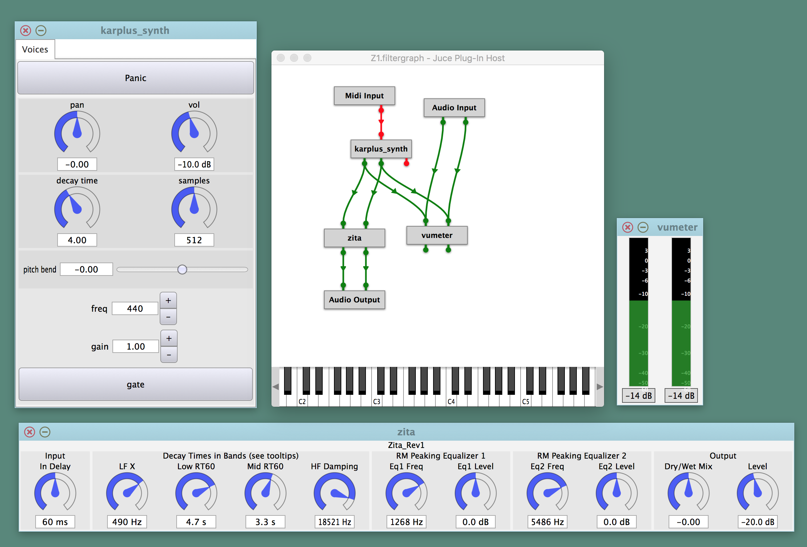
Using libfaust and LLVM
An alternative to faust2juce static-compilation model, is to use Oliver Larkin's juce_faustllvm module, also used in his pMix2 tool.
2017-01-13: WebAssembly...
Faust WebAssembly backend
WebAssembly was born with the premise of creating a safe, portable and fast to load and execute format suitable for the web. WebAssembly its not a programing language but a compilation target with a text and binary specs. That means that other low level languages like C/C++, Rust, Swift, etc. can compile to WebAssembly.
Specified and developed by principal browser compagnies (Google, Mozilla, Microsoft and Apple), this new format aims to finally replace the more hackish "asm.js" format initialy developed by Mozilla.
Development versions of Chrome and Firefox can already execute it. To get an early preview of this experimental technology, at your own risk:
-
on Chrome Canary, open chrome://flags/#enable-webassembly and enable the switch
-
on Firefox Nightly, open about:config and set javascript.options.wasm to true
See a preview of Microsoft Edge support and follow Safari support on WebKit’s feature status.
WebAssembly backends
New WebAssembly backends have been added in the faust2 development branch. They allow to generate textual or binary WebAssembly code.
'wast' textual backend
The 'wast' backend allows to generate textual WebAssembly code (in s-expression like format). Note that as of january 2017, the official textual format is not yet fully specified, thus we follow the format used in the binaryen tool.
Use the following command to generate the textual output in the terminal for a given foo.dsp file.
faust -lang wast foo.dsp
The following command:
faust -lang wast foo.dsp -o foo.wast
will generate the foo.wast textual WebAssembly output file as well as an additional foo.js JavaScript file containing glue code.
'wasm' binary backend
The 'wasm' backend allows to generate binary WebAssembly code.
Use the following command to generate the binary output in the terminal for a given foo.dsp file.
faust -lang wasm foo.dsp
The following command:
faust -lang wasm foo.dsp -o foo.wasm
will generate the foo.wast binary WebAssembly output file as well as an additional foo.js JavaScript file containing glue code.
Generating static HTML pages
WebAssembly code can be feeded into WebAudio JavaScript nodes, which can then be used like any other native WebAudio node. Two scripts are available to generate static WebAudio html pages from a given foo.dsp source file with the generated html/css/svg user interface:
faust2webaudiowast foo.dsp
will generate the textual WebAssembly output, use binaryen wasm-as tool to convert the wast to wasm format (you'll have to compile and install the binaryen tools on your machine), and produce a self-contained html page.
faust2webaudiowasm foo.dsp
will generate the binary WebAssembly output that can directly be loaded by the produced self-contained html page.
Page containing polyphonic instruments can be generated with the following commands:
faust2webaudiowast -poly foo.dsp
to use the 'wast' backend and a polyphonic ready foo.dsp, and create a self-contained html page ready to be used with a MIDI instrument.
faust2webaudiowasm -poly foo.dsp
to use the 'wasm' backend and a polyphonic ready foo.dsp, and create a self-contained html page ready to be used with a MIDI instrument.
2016-10-17: Faust Award 2016
The Faust Open Source Software Competition aims at promoting innovative high-quality free audio software developed with Faust, a functional programming language for realtime signal processing and sound synthesis. The competition is sponsored by GRAME, Centre National de Création Musicale
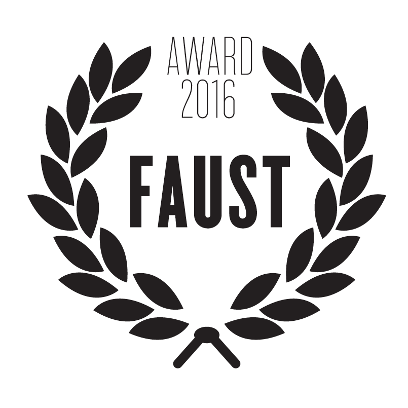
Faust Award 2016 to Ambitools
The Faust Award 2016 was attributed by an international committee composed of :
- Jean-Louis Giavitto (IRCAM, Paris, France),
- Albert Graef (Johannes Gutenberg U., Mainz, Germany),
- Pierre Jouvelot (Ecole des Mines, Paris, France),
- Victor Lazzarini (Maynooth U., Maynooth, Ireland),
- Romain Michon (Stanford U., Palo Alto, USA)
- Yann Orlarey (GRAME, Lyon, France),
- Dave Phillips (musician, journalist, and educator, USA)
- Laurent Pottier (U. Jean Monnet, Saint-Etienne, France),
- Julius Smith (Stanford U., Palo Alto, USA)
to Ambitools, a set of tools for real-time 3D sound field synthesis using higher order ambisonics (HOA).
Ambitools is developed by Pierre Lecomte, a PhD candidate at Conservatoire National des Arts et Métiers and Sherbrooke University. The core of the sound processing is written in Faust. The tools contain HOA encoders, decoders, binaural-filters, HOA signals transformations, spherical VU-Meter, etc. and can be compiled in various plug-ins format under Windows, Mac OSX, and Linux.
The jury praised the quality and the usefulness of Ambitools: a really useful and technically advanced Faust app and an impressive technical achievement ! Check the demo.
The committee was also very impressed by the quality of two other projects :
- Voice of Faust, a voice synthesizer/effects machine by Bart Brouns (demo).
- PMix, a graphical patcher, preset interpolator and JIT compiler for FAUST by Oliver Larkin (demo).
Faust Student Software Competition to TouchVoices
In parallel to the main competition, we introduced this year a junior competition: the Faust Student Software Competition, intended to promote small but interesting Faust applications, typically written as student projects.
The student prize was awarded to TouchVoices (by Pierre-Adrien Théo, RIM Master student at University Jean Monnet) a real-time web application allowing to capture, playback and transform sound loops. Here is a video of Pierre-Adrien Théo during a performance with TouchVoices.
A very close competitor was SuperBeatRepeater (by Vincent Rateau, of SuperDirt fame), a sample accurate beat repeater. Don't miss the demo!
2016-08-30: FAUST book...
The first FAUST book is Korean !
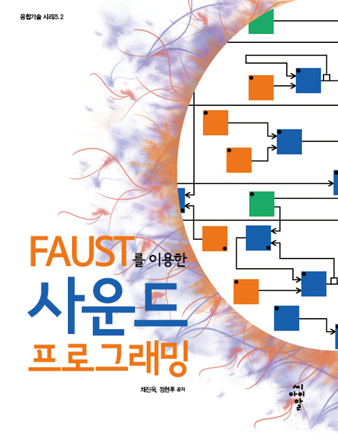
“Sound Programming using FAUST”, written by Jin-Wook Chae, an experienced audio developer and sound engineer (right) and Hyun-Hoo Jung (left), is the very first book ever published on FAUST.
While the book is written in Korean, I was able to really appreciate the choice of the examples and the elegance as well as the high quality of the code. I am sure it will be an invaluable tool to promote FAUST in Korea among sound engineering, computer music students and more generally any person interested in sound programming.
This book is for people desiring to produce musical instruments or sound processors. I have always been instructing my students that the ultimate importance is to discover interesting ideas about the sound. In spite of that, I have often relied on an unflattering response such as "you may need to learn a programming language like C/C++..." when a student asked for help with how to execute his/her ideas related to sound.
Now I am pleased to recommend the use of FAUST to bring such ideas into execution. This is an easy self-study guide that can help to do just that. Now I can confidently tell anybody pursuing sound or electronic music that their exciting and brilliant idea about sound is what truly counts!
So, really, how do we execute our ideas? Today I am introducing you to FAUST and to this book which you will find immensely helpful in terms of how to use FAUST to bring your fabulous ideas into reality.
Jinwook Chae
2016-06-30: Faust interpreter
A new 'interpreter' backend has been added in the faust2 development branch. It allows to execute Faust programs without using the LLVM dynamic compiler chain.
Interpreter compilation chain
The dynamic compilation chain allows developers to embed the Faust compiler technology directly in their application or plugins. Faust2 development branch uses an intermediate FIR representation (Faust Imperative Representation), which can be translated to several output languages. An LLVM backend has been previously developed to allows applications to compile a DSP source into executable code in memory, bypassing the external compiler requirement.
In some specific situations, embedding the LLVM chain is not possible : for instance Apple does not allow to deploy dynamic compilers on iOS. Thus having an interpreter backend allows to get around this problem and still make Faust code run on those platforms.
Interpreter backend
The interpreter backend translates the FIR intermediate language into instructions for a virtual machine. A pure C++ interpreter for this instruction set has been implemented.
Running and performances
The interpreter backend translates the FIR intermediate language into bytecode for a virtual machine. It allows to run programs about 4 to 5 slower than native speed. Moreover this interpreter can be compiled in a special 'trace' mode to automatically detect various execution errors : invalid heap access, mathematical errors or warnings (division by zero, integer overloading....) which helps us to check the compiler semantic and code generation quality.
Deployment for developers
Given a Faust source code (as a file or a string), calling the createInterpreterDSPFactoryXXX function runs the compilation chain (Faust + interpreter) and generates the “prototype” of the class, as a interpreter-dsp-factory pointer.
class interpreter_dsp_factory : public dsp_factory {
public:
/* Return Factory name */
std::string getName();
/* Return Factory SHA key */
std::string getSHAKey();
/* Return Factory expanded DSP code */
std::string getDSPCode();
/* Creates a new dsp instance */
dsp* createDSPInstance();
};
Note that the library keeps an internal cache of all allocated factories so that the compilation of the same DSP code, that is same source code and same set of 'normalized' (= sorted in a canonical order) compilations options, will return the same (reference counted) factory pointer. You will have to explicitly use deleteInterpreterDSPFactory to properly decrement the reference counter when the factory is no more needed. You can get a unique SHA1 key of the created factory using its getSHAKey method.
Next, the createDSPInstance function, corresponding to the new className of C++, instantiates a interpreter-dsp pointer to be used through its interface, connected to the audio chain and controller interfaces. When finished, simply use delete to destroy the dsp instance.
class interpreter_dsp : public dsp {
public:
void metadata(Meta* m);
int getNumInputs();
int getNumOutputs();
void init(int samplingRate);
void instanceInit(int samplingRate);
dsp* clone();
void buildUserInterface(UI* inter);
int getSampleRate();
void compute(int count, FAUSTFLOAT** input, FAUSTFLOAT** output);
};
Since interpreter_dsp is a subclass of the dsp base class, an object of this type can be used with all already available audio and UI classes, in essence reusing all architecture files already developed for the static C++ class compilation scheme (like OSCUI, httpdUI interfaces etc.), see Developing a new architecture file.
Saving/restoring the factory
After the DSP factory has been compiled, your application or plugin may want to save/restore it in order to save Faust to interpreter bytecode compilation at next use. To get the internal factory compiled code, several functions are available:
- writeInterpreterDSPFactoryToMachine allows to get the interpreter bytecode as a string, writeInterpreterDSPFactoryToMachineFile allows to save the interpreter bytecode in a file,
To re-create a DSP factory from a previously saved code, several functions are available:
- readInterpreterDSPFactoryFromMachine allows to create a DSP factory from a string containing the interpreter bytecode, readInterpreterDSPFactoryFromMachineFile allows to create a DSP factory from a file containing the interpreter bytecode.
The complete API is available and documented in the installed faust/dsp/interpreter-dsp.h header.
2016-04-07: Web Audio API
Faust and the Web Audio API (3)
The Faust compiler can now directly be used in a Web page. Thanks to the Emscripten compiler, the Faust compiler itself can be compiled to asm.js JavaScript. This has been done by compiling the libfaust C++ library to the libfaust.js JavaScript library, that exports a unique entry point.
Compiling DSP to JavaScript (asm.js)
The libfaust.js exported function createAsmCDSPFactoryFromString(...) allows to create a DSP factory from a given DSP program as a source string and a set of compilations parameters, uses the Faust compiler asm.js backend, and produces the complete asm.js module and additional pure JavaScript methods as a string.
Then calling JavaScript 'eval' function on this string compiles it in the browser. The dynamically created asm.js module and additional pure JavaScript methods can then be used.
This internal code in then wrapped with additional JavaScript code. A DSP “factory” will be created from the DSP source code with the following 'synchronous' code (if using the 'libfaust.js' library):
var factory = faust.createDSPFactory(code, arguments);
or possibly (if using the 'libfaustworker.js' library in the 'asynchronous' model):
faust.createDSPFactory(code, arguments, callback);
where 'code' is the DSP source as a string, and 'arguments' is an array of parameters to be given to the Faust compiler (like '-vec', '-vs 512'...), and 'callback' is a function taking the created 'factory' as argument.
When no more used, you'll have to explicitly use the following code the deallocate the factory:
faust.deleteDSPFactory(factory);
Your application may want to save the already compiled factory as asm.js/JavaScript code to speed-up possible restore at later time:
var machine_code = faust.writeDSPFactoryToMachine(factory);
And restore the factory with the following code:
var factory = faust.readDSPFactoryFromMachine(machine_code);
Using DSP instances
A fully working DSP “instance” as a Web Audio node is then created with the code:
var dsp = faust.createDSPInstance(factory, audio_context, buffer_size);
When no more used, you'll have to explicitly use the following code to deallocate the instance:
faust.deleteDSPInstance(dsp);
This instance can be used like the statically compiled one, as previously described in this page.
Polyphonic instruments
Polyphonic instruments can be produced. For a given 'factory' the following code will create a 16 voices polyphonic instance:
var dsp = faust.createPolyDSPInstance(factory, audio_context, buffer_size, 16);
This instance can be used like the statically compiled one, as previously described in this page.
Using Faust JavaScript library
The Emscripten compiled Faust library can be used in two ways. Either using the 'libfaust.js' library:
<script src="libfaust.js"></script>
<script src="webaudio-asm-wrapper.js"></script>
or if using worker mode with the following code which loads the 'libfaustworker.js' library:
<script src="webaudio/webaudio-asm-worker-wrapper.js"></script>
2016-02-05: Faust Award 2016
Faust Award 2016: deadline June 1, 2016
The Faust Open-Source Software Competition is intended to promote innovative high-quality free audio software developed with the Faust programming language, as well as development tools build around the Faust compiler itself. The Faust Open-Source Software award will be attributed to the best submission by an international committee of leading experts in the field. The competition is sponsored by Grame, centre national de création musicale. The winning software will receive a 2000€ price to encourage its authors. The results will be announced July 15, 2016.
To participate, the software must be provided with source code and licensed with a Free/Open Source license. A substantial part of the software must be written in Faust and the Faust source code must be provided. As part of the review process, the software will be built from the sources. All source code, license, video demonstration, installation instructions, and any other documentation must be available on a public web page. License compatibility with other open source software is encouraged. Dependencies on non-open source third-party software are discouraged, with the exception of operating systems and freely available commercial packages.
Authors are required to prepare a video demonstrating the software. This video must be done carefully, and should convincingly present the qualities of the software. The submission must also contain any useful documentation, including examples of how the provided software might be used, existing prototypes that use the software, download statistics or other public usage information. The criteria for judging submissions includes broad applicability and potential impact, novelty, technical depth, reusability, etc.
Junior Competition
In parallel to the Faust Open-Source Software Competition we introduce this year a junior competition, the Faust Student Software Competition, with a 200€ prize for the winner. The Faust Student Software Competition is intended to promote interesting audio processing and synthesis applications written in Faust in a single file in less than 1000 words. The word count is done after removing the comments from the code:
cat foo.dsp | stripcmt | wc -w.
The use of the standard Faust libraries is strongly encouraged. They don't take part in the word count.
Important dates
- Start of the competition: February 8, 2016
- Software Submission Deadline: June 1, 2016
- Results of the competition: July 1, 2016
Submission Guidelines
Authors interested in participating in the Faust Open Source Software Competition or the Faust Student Software Competition should send a submission email to faustaward@grame.fr with a PDF file attached containing the following information:
- Title of submission,
- Category of submission (Faust Open Source Software Competition or Faust Student Software Competition),
- Name, email and affiliation of the main author,
- Names, emails and affiliations of other authors,
- A permanent link for the open source software (e.g., Sourceforge, GitHub, Google Code, etc.),
- A permanent link for the video demonstration (e.g., YouTube, Vimeo, etc.),
- A link to a compressed archive file that contains the software (source code, documentation, build/install instructions, and licenses). Comprehensive and clear build/install instructions will be a crucial component of any submission. The committee will make a reasonable effort to build the software for the top contributions, but if they are unable to make the software run, it will be excluded from the competition.
International Committee
- Jean-Louis Giavitto (IRCAM, Paris, France),
- Albert Gräf (Johannes Gutenberg U., Mainz, Germany),
- Pierre Jouvelot (Ecole des Mines, Paris, France),
- Victor Lazzarini (Maynooth U., Maynooth, Ireland),
- Romain Michon (CCRMA, Stanford , USA)
- Yann Orlarey (Grame, Lyon, France),
- Dave Phillips (Musician/Journalist, Findlay, USA)
- Laurent Pottier (U. Jean Monnet, Saint Etienne, France),
- Julius Smith (CCRMA, Stanford , USA)
Previous Winners
- 2015: Guitarix, by Hermann Meyer and Andreas Degert